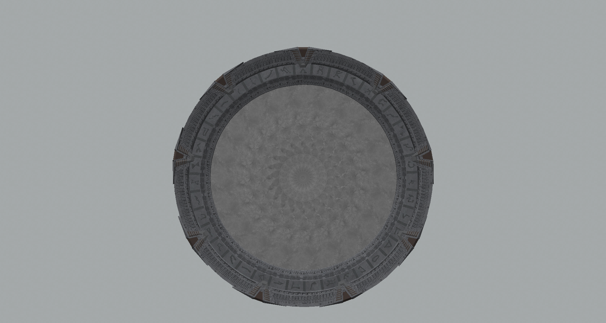
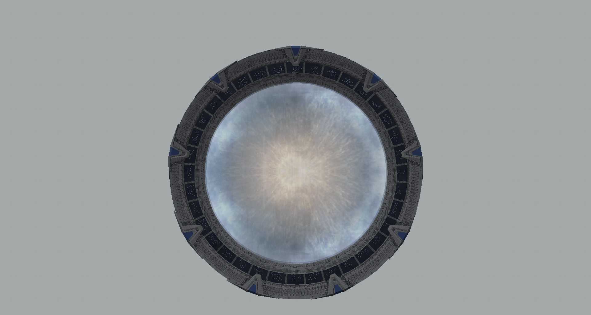

General
Irises are a device mounted on stargates to prevent unauthorized travelers from coming through the gate. To prevent an unauthorized traveler from coming through a stargate Irises are mounted so that the distance between them and the event horizon of the gate is less than 3 μm preventing most forms of matter from properly reintegrating thus any matter that "hits" an iris is destroyed however energy can get through irises such as Radio waves and lasers in the show we see examples of both for radio waves we see sg teams communicating with the sgc through an active wormhole even with the iris closed. to have the ris opened for them SG teams and some allies used GDOs (garage door openers) to broadcast an IDC (iris deactivation code) through the gate to let the end with the iris know to open the iris.
Titanium

The titanium Iris was the first iris used by the SGC, as its name suggests it is composed of titanium this iris is the least durable of the 3 different types in the mod it has 500 durability (configurable). this Iris functions through 20 overlapping blades that rotate shut like a camera leaf shutter when moving.
Trinium

The Trinium iris is the second and more durable iris sued by the SGC, in the show it was composed of a Trinium-Titanium alloy however in the mod it is composed of pure Trinium and has 1000 durability (configurable). This iris functions identically to the Titanium iris
Shield

The Shield is the equivalent device to an iris found on Atlantis it is an energy shield of similar function to an iris used to prevent unauthorized travelers from coming through the gate. In the mod this iris has a constant power draw of 500 RF/t (configurable) whilst active.